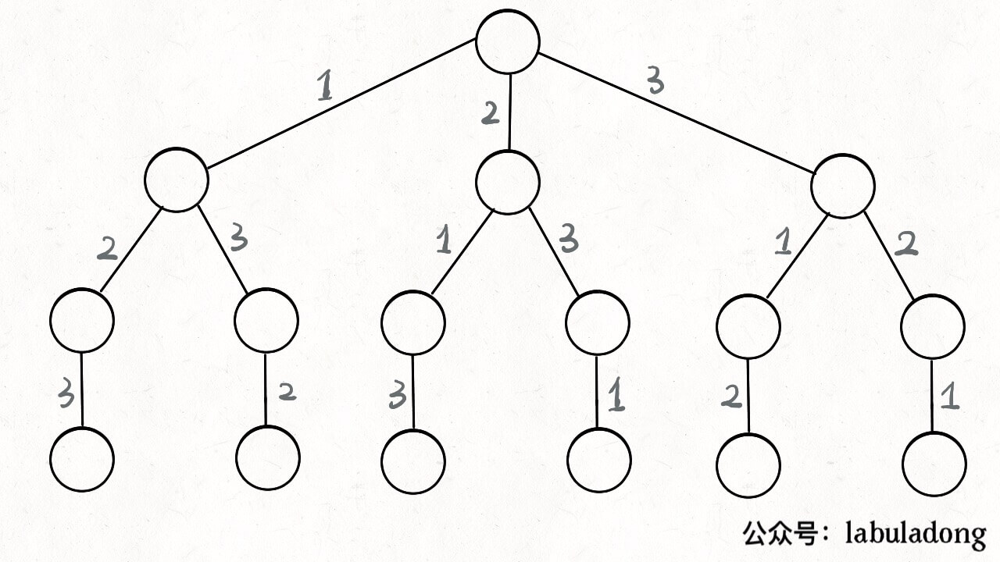
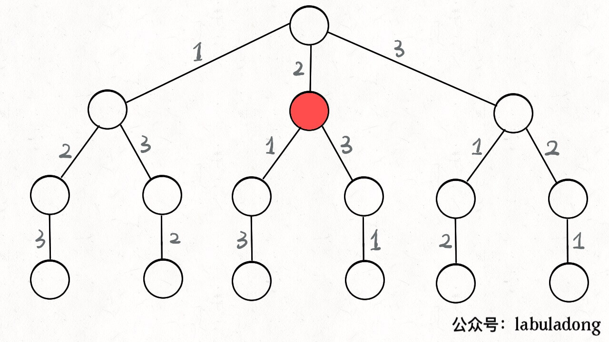
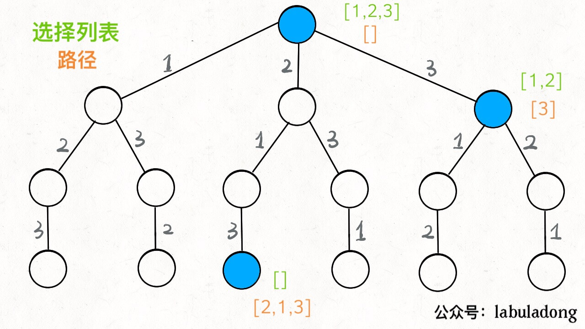
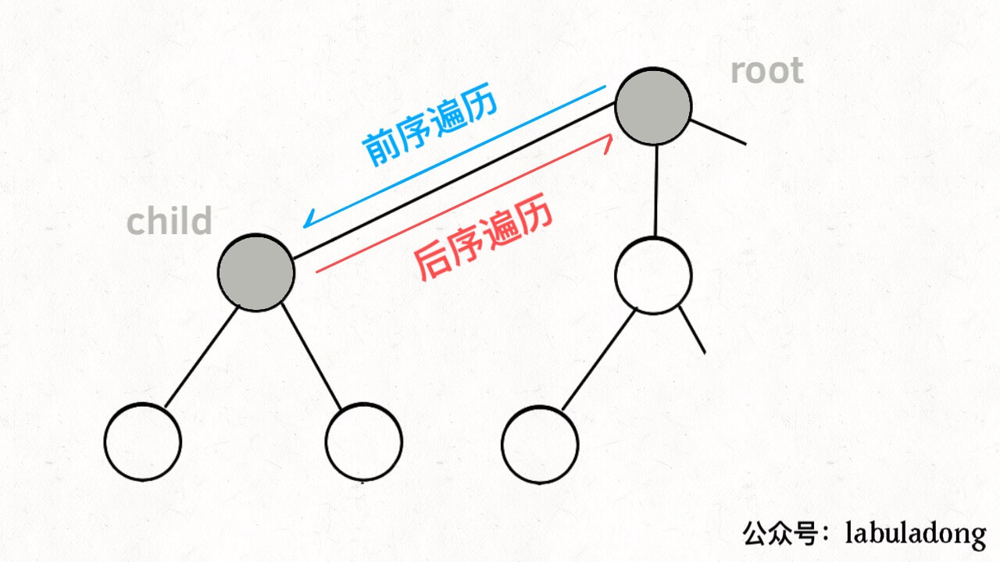
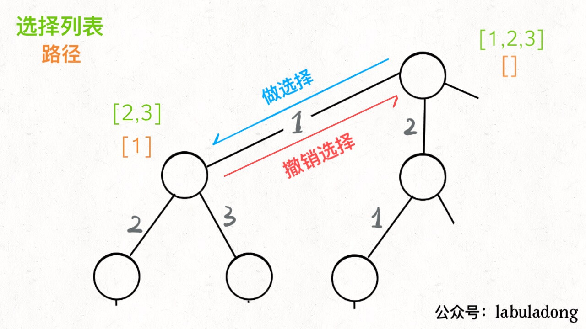
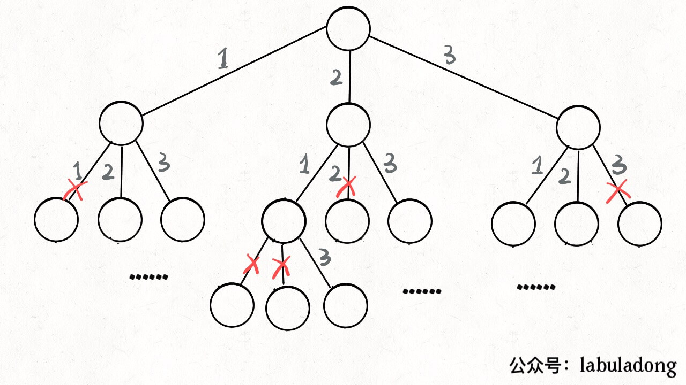
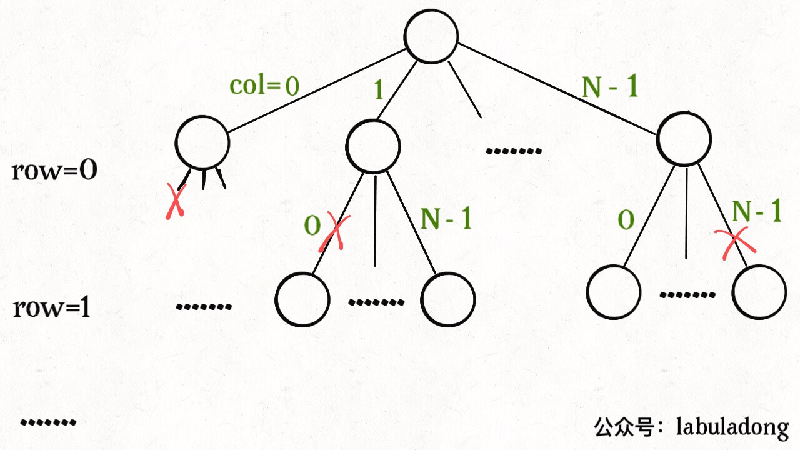

回溯算法
回溯算法其实就是我们常说的 DFS 算法，本质上就是一种暴力穷举算法。
框架
其实回溯算法其实就是我们常说的 DFS 算法，本质上就是一种暴力穷举算法。
废话不多说，直接上回溯算法框架。解决一个回溯问题，实际上就是一个决策树的遍历过程。你只需要思考 3 个问题：
1、路径：也就是已经做出的选择。
2、选择列表：也就是你当前可以做的选择。
3、结束条件：也就是到达决策树底层，无法再做选择的条件。
如果你不理解这三个词语的解释，没关系，我们后面会用「全排列」和「N 皇后问题」这两个经典的回溯算法问题来帮你理解这些词语是什么意思，现在你先留着印象。
代码方面，回溯算法的框架：
1 | result = [] |
其核心就是 for 循环里面的递归，在递归调用之前「做选择」，在递归调用之后「撤销选择」，特别简单。
什么叫做选择和撤销选择呢，这个框架的底层原理是什么呢？下面我们就通过「全排列」这个问题来解开之前的疑惑，详细探究一下其中的奥妙！
全排列问题
我们在高中的时候就做过排列组合的数学题，我们也知道 n 个不重复的数，全排列共有 n! 个。
PS：为了简单清晰起见，我们这次讨论的全排列问题不包含重复的数字。
那么我们当时是怎么穷举全排列的呢？比方说给三个数 [1,2,3]，你肯定不会无规律地乱穷举，一般是这样：
先固定第一位为 1，然后第二位可以是 2，那么第三位只能是 3；然后可以把第二位变成 3，第三位就只能是 2 了；然后就只能变化第一位，变成 2，然后再穷举后两位……
其实这就是回溯算法，我们高中无师自通就会用，或者有的同学直接画出如下这棵回溯树：

只要从根遍历这棵树，记录路径上的数字，其实就是所有的全排列。我们不妨把这棵树称为回溯算法的「决策树」。
为啥说这是决策树呢，因为你在每个节点上其实都在做决策。比如说你站在下图的红色节点上：

你现在就在做决策，可以选择 1 那条树枝，也可以选择 3 那条树枝。为啥只能在 1 和 3 之中选择呢？因为 2 这个树枝在你身后，这个选择你之前做过了，而全排列是不允许重复使用数字的。
现在可以解答开头的几个名词：[2]就是「路径」，记录你已经做过的选择；[1,3] 就是「选择列表」，表示你当前可以做出的选择；「结束条件」就是遍历到树的底层，在这里就是选择列表为空的时候。
如果明白了这几个名词，可以把「路径」和「选择」列表作为决策树上每个节点的属性，比如下图列出了几个节点的属性：

我们定义的 backtrack 函数其实就像一个指针，在这棵树上游走，同时要正确维护每个节点的属性，每当走到树的底层，其「路径」就是一个全排列。
再进一步，如何遍历一棵树？这个应该不难吧。回忆一下之前「学习数据结构的框架思维」写过，各种搜索问题其实都是树的遍历问题，而多叉树的遍历框架就是这样：
1 | void traverse(TreeNode root) { |
而所谓的前序遍历和后序遍历，他们只是两个很有用的时间点，我给你画张图你就明白了：

前序遍历的代码在进入某一个节点之前的那个时间点执行，后序遍历代码在离开某个节点之后的那个时间点执行。回想我们刚才说的，「路径」和「选择」是每个节点的属性，函数在树上游走要正确维护节点的属性，那么就要在这两个特殊时间点搞点动作：

我们只要在递归之前做出选择，在递归之后撤销刚才的选择，就能正确得到每个节点的选择列表和路径。
下面，直接看全排列代码：
1 | List<List<Integer>> res = new LinkedList<>(); |
我们这里稍微做了些变通，没有显式记录「选择列表」，而是通过 nums 和 track 推导出当前的选择列表：

至此，我们就通过全排列问题详解了回溯算法的底层原理。当然，这个算法解决全排列不是很高效，应为对链表使用 contains 方法需要 O(N) 的时间复杂度。有更好的方法通过交换元素达到目的，但是难理解一些，这里就不写了，有兴趣可以自行搜索一下。
但是必须说明的是，不管怎么优化，都符合回溯框架，而且时间复杂度都不可能低于 O(N!)，因为穷举整棵决策树是无法避免的。这也是回溯算法的一个特点，不像动态规划存在重叠子问题可以优化，回溯算法就是纯暴力穷举，复杂度一般都很高。
明白了全排列问题，就可以直接套回溯算法框架了，下面简单看看 N 皇后问题。
N皇后问题
给你一个 N×N 的棋盘，让你放置 N 个皇后，使得它们不能互相攻击。
PS：皇后可以攻击同一行、同一列、左上左下右上右下四个方向的任意单位。
这个问题本质上跟全排列问题差不多，决策树的每一层表示棋盘上的每一行；每个节点可以做出的选择是，在该行的任意一列放置一个皇后。
直接套用框架:
1 | vector<vector<string>> res; |
这部分主要代码，其实跟全排列问题差不多，isValid 函数的实现也很简单：
1 | /* 是否可以在 board[row][col] 放置皇后？ */ |
函数 backtrack 依然像个在决策树上游走的指针，通过 row 和 col 就可以表示函数遍历到的位置，通过 isValid 函数可以将不符合条件的情况剪枝：

总结
写 backtrack 函数时，需要维护走过的「路径」和当前可以做的「选择列表」，当触发「结束条件」时，将「路径」记入结果集。
其实想想看，回溯算法和动态规划是不是有点像呢？我们在动态规划系列文章中多次强调，动态规划的三个需要明确的点就是「状态」「选择」和「base case」，是不是就对应着走过的「路径」，当前的「选择列表」和「结束条件」？
某种程度上说，动态规划的暴力求解阶段就是回溯算法。只是有的问题具有重叠子问题性质，可以用 dp table 或者备忘录优化，将递归树大幅剪枝，这就变成了动态规划。而今天的两个问题，都没有重叠子问题，也就是回溯算法问题了，复杂度非常高是不可避免的。